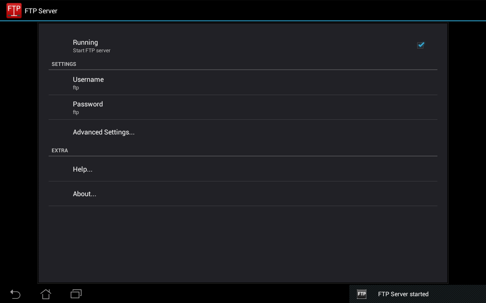
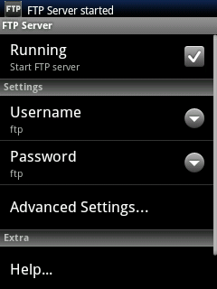

FTP Server (swiftp)
Market
Free Demo
An FTP Server for your android device.
Description
This program allows you to run an ftp server on your android device. This means that any
program can access the files on your device while the ftp server is running. For example,
entering 'ftp://...' in the firefox url bar will allow you to browse the files on your
device from a desktop pc or a laptop.
By default, the user name and password are both 'ftp', you should change them. You use
this username and password when accessing the server.
There is a configuration option ("keep phone awake") that fixes a problem where
file transfers go slow or stop completely when the phone sleeps. If you have this
problem, check this box and restart SwiFTP. Your phone will stay awake as long as
the server is running.
For power and security reasons, it is recommended that the server be stopped after use.
Screenshots
Left on a tablet running ICS, right on a phone running eclair.


History
Version 2.2 (2/10/2012): Fixed bugs, hides password.
Version 2.1 (28/06/2012): Initial release with new interface.
Version 1.4 and before: Programming by Dave Revell.
Download
You can buy this application from the google play market,
here.
Buying the application supports the further development of this appication.
You can also download a free demo
here.
License
GNU General Public License version 3.0
About
Code
FTP Server (swiftp) is open source software, for which the code is available on github. See
ppareit/swiftp. You can also clone the
project with Git by running:
$ git clone git://github.com/ppareit/swiftp
You can mail me with any comment, suggestion
or correction.